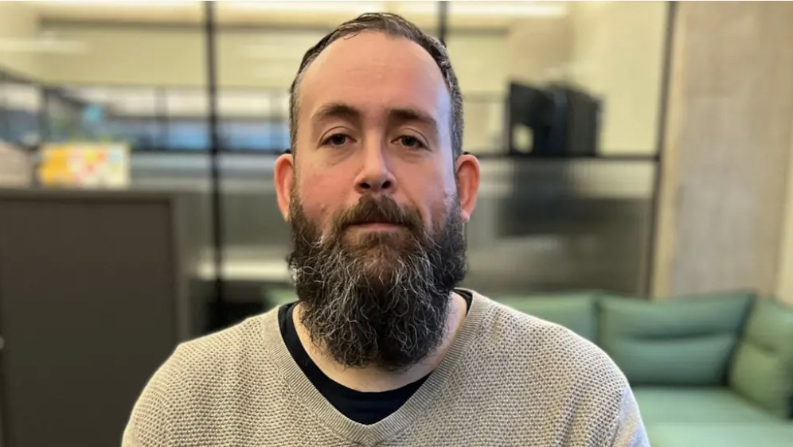

About me
I’m Jamie, though most people who’ve worked with me know me as JT.
I’ve spent 18 years in the games industry, all of it at Rockstar North, progressing from QA through design support into a full design role. That route gave me a practical, ground-level understanding of how games are actually built, not just designed on paper.
I design missions, encounters and open-world content, and I own the work from early concept through to ship. My QA background means I think about how content breaks as much as how it’s meant to work. Players rarely do what you expect, and I find that interesting rather than frustrating.
I look for unexpected angles. My Paperboy mission (Acid Lab: Sell, on the GTA Online page) is a good example: a delivery brief that became something with its own character because I looked for a different way in. Constraints tend to produce better ideas than open briefs.
Getting content to ship takes constant communication with a lot of people, and I’ve always been more interested in what the team produces together than in protecting individual credit. I also enjoy sharing knowledge: bringing people up to speed and passing on what has and hasn’t worked.
Content that plays identically every time is content players stop noticing, so I build in reasons to come back. In the Whistleblower mission (on the GTA Online page), one of three bonus objectives is picked at random, and the improvised cover props left by fleeing workers reward a second look.
I’m based in the Edinburgh area and looking for my next role. Since leaving Rockstar I’ve been building prototypes in Unreal Engine 5 and Godot.

EXPERIENCE
Rockstar North (2007–2025)
- Designer (2018–2025)
- Designed and implemented player-facing open-world gameplay, encounters, and mission content, owning features from early concept through scripting, iteration, and final polish.
- Design Support (2011–2018)
- Embedded within design teams, supporting gameplay implementation, iteration, and problem-solving across large-scale projects, with increasing ownership and responsibility over time.
- QA (2007–2011)
- Tested gameplay systems and player-facing content on multiple AAA titles, developing a strong foundation in game quality, production realities, and cross-discipline communication.
SKILLS
- Gameplay & content design for open-world games
- Encounters, missions, and player-facing systems
- Scripting and data-driven implementation
- C# scripting
- Visual scripting and node-based logic
- Behaviour trees
- Iteration, tuning, and polish
- Narrative delivered through gameplay and environment
- Cross-discipline collaboration
- Mentoring and onboarding
- Production workflows and live development constraints
- Unreal Engine 5 (actively developing)
- Godot (actively developing)